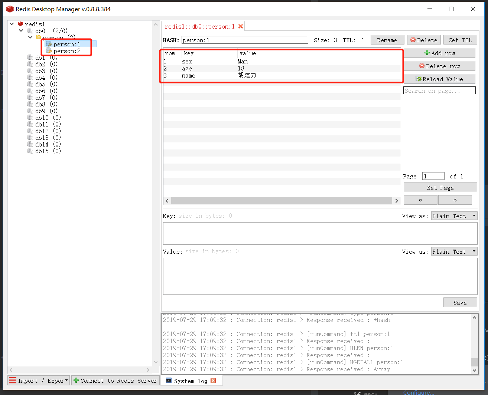

Contents
13.9. Python操作Redis数据库¶
13.9.1. 基础操作¶
#!/usr/bin/env python
#-*- coding:utf8 -*-
import redis
#入门及使用
'''
import redis
conn = redis.Redis(host="127.0.0.1", port=6379)
#写入两条数据
conn.set('name', 'hujianli')
conn.set('url', 'www.baidu.com')
#获取一条数据
print(conn.get('name'))
print(conn.get('url'))
'''
'''
##使用连接池连接到Redis
pool = redis.ConnectionPool(host="127.0.0.1", port=6379)
conn = redis.Redis(connection_pool=pool)
print(conn.set('hello', 'world'))
print(conn.get('hello'))
'''
##API
'''
redis-py提供的API用来操作redis
String API
set(name, value, ex=None, px=None, nx=False, xx=False)
参数 描述
ex 过期时间（秒）
px 过期时间（毫秒）
nx 如果设置为True，则只有name不存在时，当前set操作才执行
xx 如果设置为True，则只有name存在时，岗前set操作才执行
'''
eg
#!/usr/bin/env python
# -*- coding:utf8 -*-
# auther; 18793
# Date：2019/7/29 17:06
# filename: 01.staduy001.py
import redis
r = redis.StrictRedis(host="localhost", port=6379, db=0)
p1 = {
"name": "胡建力",
"age": 18,
"sex": "Man",
}
p2 = {
"name": "科比",
"age": 30,
"sex": "Man",
}
# 将数据保存到Redis中
r.hmset("person:1", p1)
r.hmset("person:2", p2)
# 关闭链接
r.connection_pool.disconnect()

13.9.2. 封装Redis的类¶
#!/usr/bin/env python
#-*- coding:utf8 -*-
import redis
r = redis.Redis()
class MyRedis():
def __init__(self,ip, passwd, port=6379,db=0):
#构造函数
try:
self.r = redis.Redis(host=ip, password=passwd,port=port, db=db)
except Exception as e:
print('redis连接失败，错误信息%s' %e)
def str_get(self, k):
res = self.r.get(k)
if res:
return res.decode()
def str_set(self, k ,v, time=None):
self.r.set(k, v, time)
def delete(self, k):
tag = self.r.exists(k) #判断这个Key是否存在
if tag:
self.r.delete(k)
print('删除成功')
else:
print('这个key不存在')
def hash_hget(self, name, key):
res = self.r.hget(name, key)
if res:
return res.decode()
def hash_hset(self,name, k, v):
self.r.hset(name, k, v)
def hash_getall(self, name):
res = self.r.hgetall()
new_dict = {}
if res:
for k, v in res.items():
k = k.decode()
v = v.decode()
new_dict[k] = v
return new_dict
def hash_del(self, name,k):
res = self.r.hdel(name, k)
if res:
print('删除成功')
return True
else:
print('删除失败.该key不存在')
return False
@property
def clean_redis(self):
self.r.flushdb() #清空redis
print('清空redis成功.')
return 0
a = MyRedis('1118.24.3.40','密码')
a.clean_redis